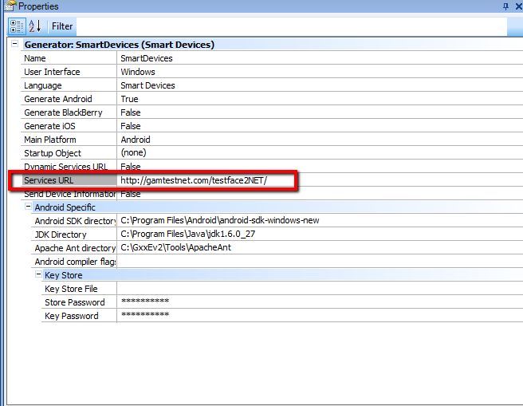

How to test Facebook Authentication Type/ Twitter Authentication Type for SD applications using Android Emulator, taking into account the considerations explained in Prototyping applications with Facebook or Twitter Authentication. In order to test Facebook or Twitter authentication, the URL of the application should not be "localhost" and shouldn´t have reference to the port (for example, http://localhost:8080 is not a valid URL, neither http://localhost, nor http://server:8080). If you want to test locally (using Android Emulator) you need to make some changes in hosts file of the PC, and of the emulator. In Android Emulator, you need to start it manually: 1. Open a command prompt and execute: c:\<Android Home>\tools\emulator -avd myGxAvd -partition-size 128 2. Open another command prompt and execute: C:\<Android Home>\platform-tools\adb remount 3. C:\<Android Home>\platform-tools\adb pull /system/etc/hosts c:\tmp 4. Edit the file c:\tmp\hosts, and add the following line, note that the server name is the same as the one configured in "services URL" GeneXus property. See figure 1. In this example, our application is a .NET application, and we chose gamtestnet.com as the server name. It can be a Ruby or a Java application also. 10.0.2.2 gamtestnet.com  Figure 1.5. C:\<Android Home>\platform-tools\adb push c:\tmp\hosts /system/etc This steps must be followed each time the emulator needs to be run. See AlsoTesting Facebook / Twitter authentication for NET WEB applications
|
| Backlinks | |
| Prototyping applications with Facebook or Twitter Authentication locally | Testing Facebook / Twitter authentication for WEB - NET applications |